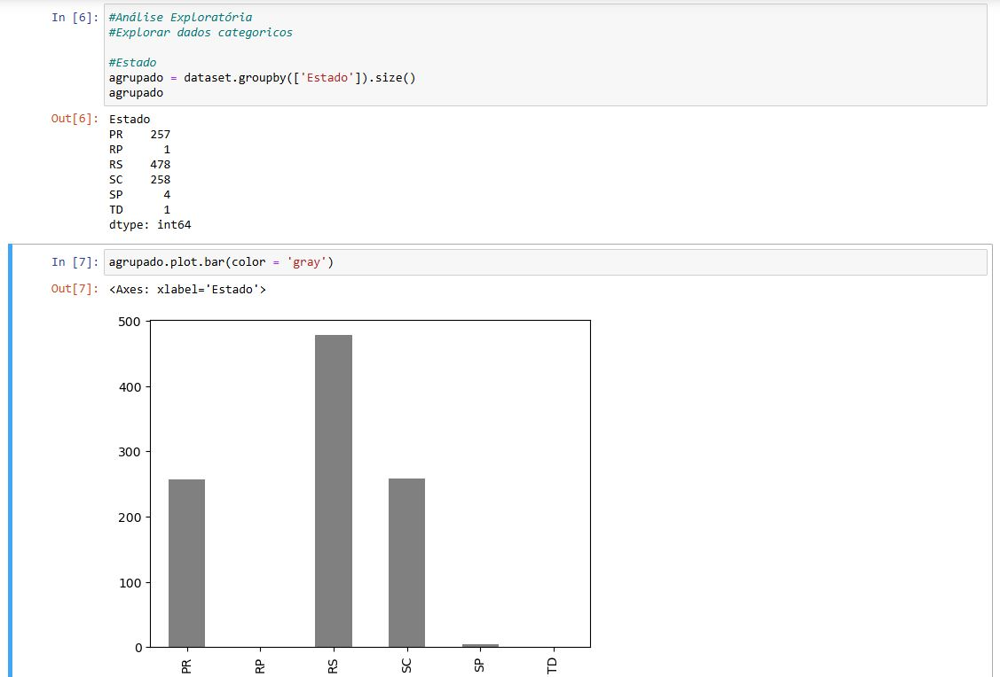
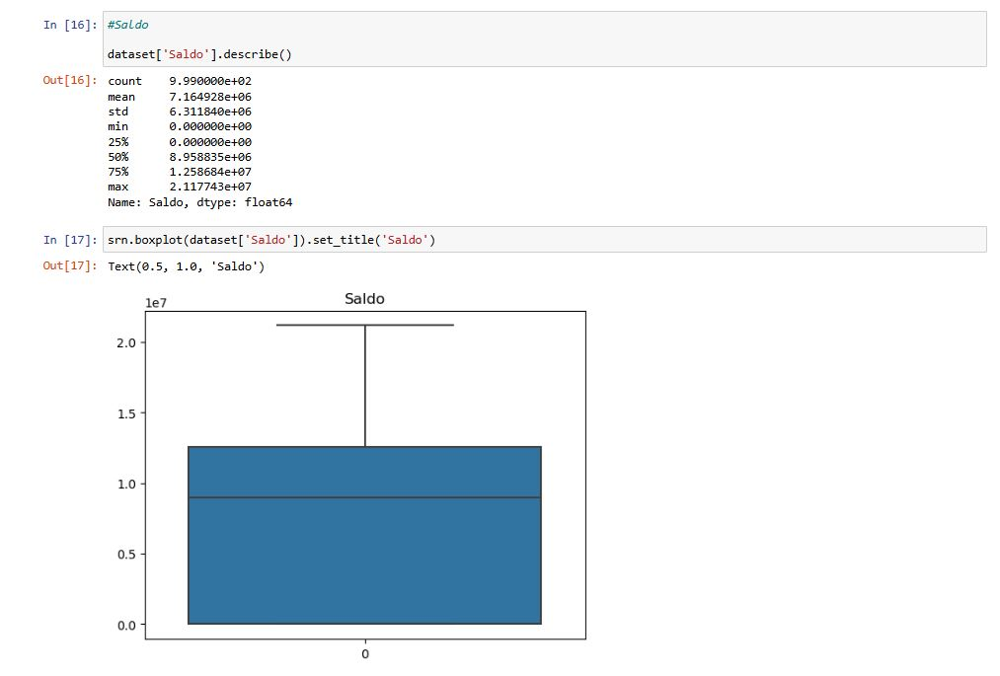
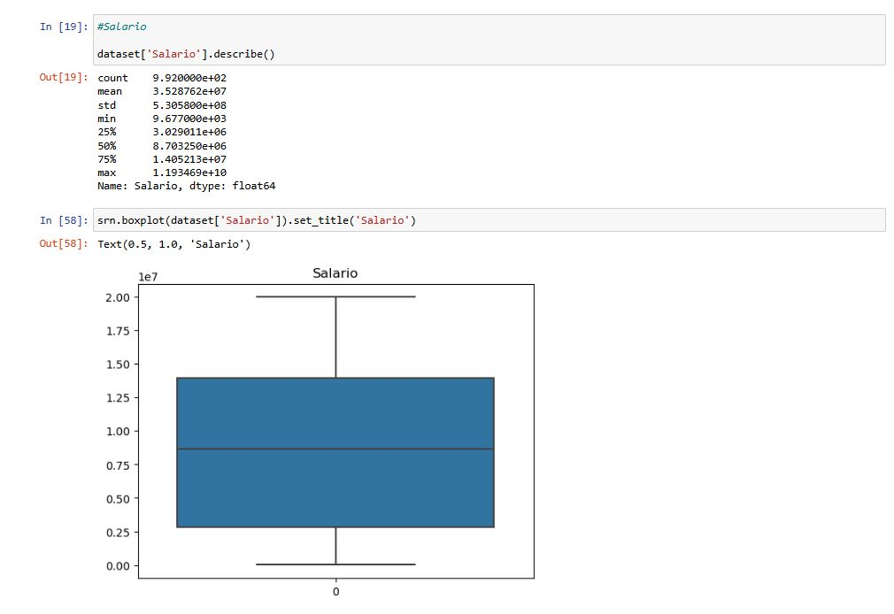
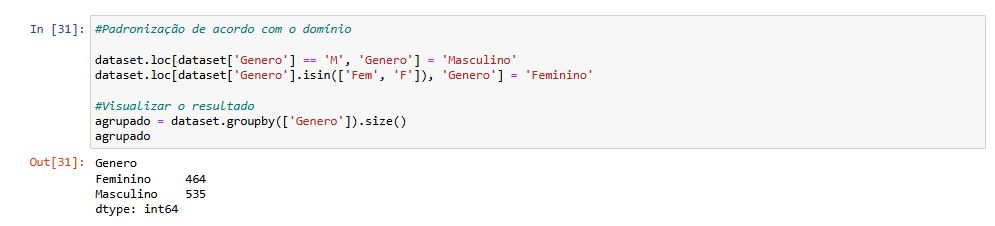
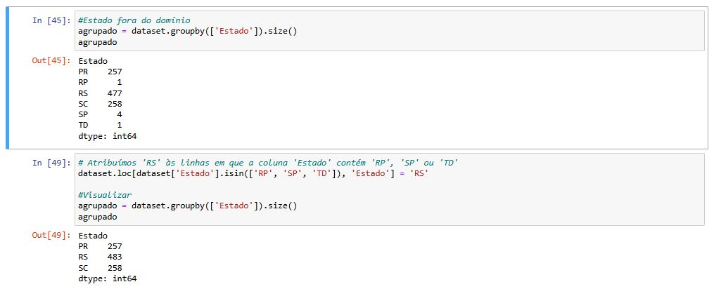
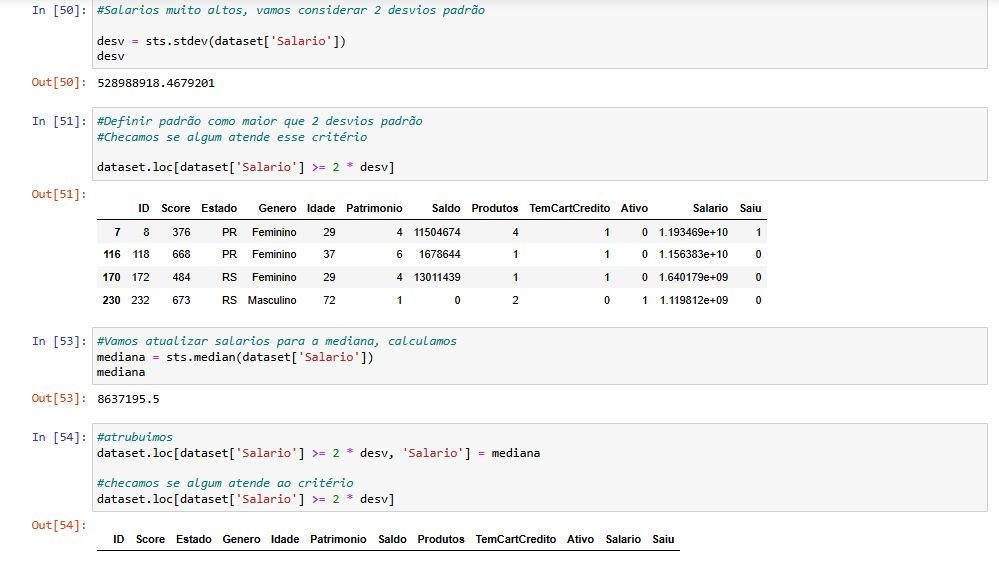

Análise exploratória de dados bancários
Projeto de Ciência de Dados, desenvolvido em Python, com o objetivo de realizar o tratamento de dados para uma empresa do setor bancário.
Bibliotecas
As ferramentas empregadas no projeto foram:
- Pandas: Para manipulação e tratamento de dados;
- Seaborn: Para a criação de gráficos e visualizações;
- Statistic: Para cálculos estatísticos.
Etapas do Projeto
Exploração Inicial
>Iniciei a análise importando as bibliotecas que serão utilizadas e, em seguida, com a visualização da estrutura da tabela de dados para identificar possíveis inconsistências e planejar as etapas seguintes do tratamento.

Análise Exploratória de Dados (EDA)
Coluna: Estados
Identifiquei registros fora do domínio esperado: RP, SP e TD.
Coluna: Gênero
Observei a atribuição inconsistente de valores para o mesmo gênero, como "F", "Fem" e "Feminino" para o gênero feminino.

Coluna: Score
Explorei os valores dessa coluna e gerei gráficos para facilitar a interpretação.
O gráfico utilizado é o Boxplot é uma representação visual das principais estatísticas descritivas de um conjunto de dados. Ele exibe informações sobre a distribuição dos dados, incluindo a mediana, os quartis, a amplitude e a presença de valores atípicos.

O gráfico utilizado é o Histplot, ou Histograma, ele mostra a distribuição de frequência que permite analisar visualmente como uma amostra/população está distribuída. Ou seja, é uma representação gráfica da distribuição de um conjunto de dados. É uma estimativa da distribuição de probabilidade de uma variável contínua.

Coluna: Idade
Explorei os valores dessa coluna para verificar a media de idades dos usuários cadastrados


Coluna: Saldo
Visualizei os valores dessa coluna para ter uma ideia do saldo em conta, dessa forma é possível ter uma ideia rasa de quantos cilentes estão ativos.

Coluna: Salário
Os valores dessa coluna devem ser analisados com cuidado, pois, nos passos à seguir, valores fora da curva podem se tornar um problema para alguns tipos de análise.

Tratamento de Dados Nulos
Valores nulos podem ser problemáticos porque afetam a qualidade e a integridade dos dados, levando a resultados inconsistentes ou imprecisos. Em análise de dados, eles podem distorcer médias, medianas e outras métricas. Na ciência de dados e aprendizado de máquina, algoritmos geralmente não lidam bem com valores ausentes, o que pode resultar em erros ou baixa performance do modelo.
Genero e Salario
Primeiramente analisei os valores nulos presentes nas colunas referentes a Genero e Salario

Dependendo do contexto, é comum tratar valores nulos, substituindo-os ou removendo-os. Para esse projeto optei por substituir os valores nulos pela média e mediana.

Aproveitando o ajuste na Coluna 'Genero', segui com a padronização dos valores.
Tratamento de Inconsistencias
Idade
Foram identificados valores negativos e exageradamente altos. Me baseando nos gráficos pude compreender a distribuição dos dados antes de definir uma regra de correção, baseada na mediana.

Valores Duplicados
Ao identificar registros duplicados, optei por remover um deles para garantir a integridade da análise.

Padronização de Dados
Estados Fora do Domínio
Quando analisei a tabela de Estados durante a etapa de análise exploratória, observei que existem cadastros com informações de dados onde o banco não possui agências, ou o estado foi adicionado de modo incorreto. Ainda utilizando a Media, dados incorretos foram substituídos.
Salários Fora da Curva
Valores fora da curva (outliers) podem distorcer análises ao influenciar métricas como médias, variâncias e correlações, levando a interpretações erradas dos dados. Em aprendizado de máquina, eles podem causar overfitting, onde o modelo se ajusta excessivamente a dados atípicos, prejudicando a generalização. Me baseando nisso, segui utilizando a regra de padronizar os valores fora da curva, para valores com até dois desvio padrão. realizar a média e seguir com a substituição.
O desvio padrão mede a dispersão dos dados em relação à média, indicando o quanto os valores variam. Um desvio padrão baixo significa que os dados estão próximos da média, enquanto um desvio alto indica maior variabilidade
Finalização
Após passar por todas as etapas de análise, consegui estabalecer um padrão para os dados coletados. Agora a tabela está organizada, com dados reais e ajustados.

Seguindo adiante, será possível utilizar esses dados para realizar um projeto de Ciência de Dados mais avanaçado, criar um dashboard com PowerBI para apresentar os dados em uma reunião ou utilizar os dados para um projeto de Machine Learning.